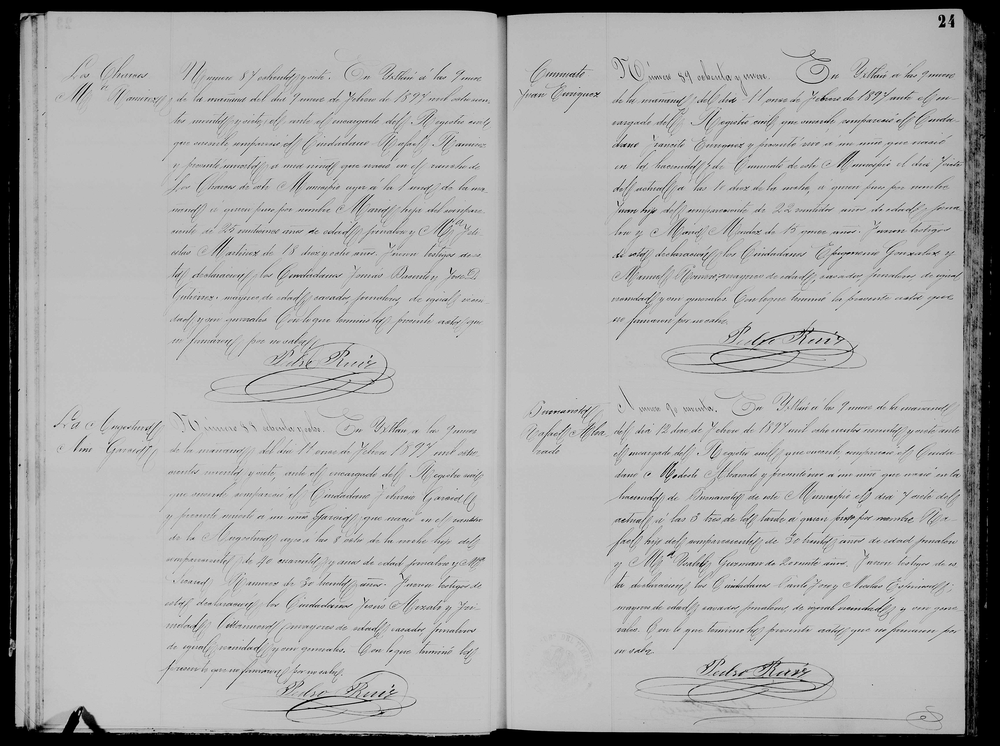

Juan Enrriquez

| Tipo | Acta de nacimiento |
| Fecha | 7 de febrero de 1897 |
| Lugar | Ixtlán |
| Nacido | Juan Enrriquez |
| Padres | Trancito Enriquez y Maria Mendez (según el índice) |
Transcripción pendiente de verificación: los datos provienen del índice del registro; el manuscrito no ha sido releído línea por línea. Todo texto manuscrito no verificado se marca «ilegible/duda».